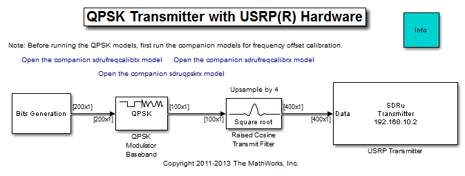
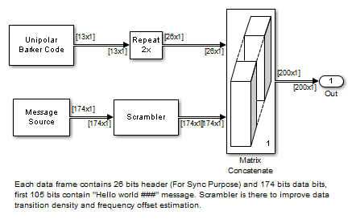

QPSK Transmitter with USRP® Hardware
This model shows how to use the Universal Software Radio Peripheral® (USRP®) device with Simulink® to implement a QPSK transmitter. The USRP® device in this model will keep transmitting indexed 'Hello world' messages at its specified center frequency. You can demodulate the transmitted message using the QPSK Receiver with USRP® Hardware model with an additional USRP® device.
In order to run this model, you need to ensure that the specified center frequency of the SDRu Transmitter is within the acceptable range of your USRP® daughterboard. Please refer to Getting Started for details on configuring your host computer to work with the SDRu Transmitter block.
Contents
Structure of the Example
The top-level structure of the model is shown in the following figure:
The transmitter includes the Bit Generation subsystem, the QPSK Modulator block, and the Raised Cosine Transmit Filter block. The Bit Generation subsystem uses a MATLAB workspace variable as the payload of a frame, as shown in the figure below. Each frame contains 200 bits. The first 26 bits are header bits, a 13-bit Barker code that has been oversampled by two. The Barker code is oversampled by two in order to generate precisely 13 QPSK symbols for later use in the Data Decoding subsystem of the receiver model. The remaining bits are the payload. The first 105 bits of the payload correspond to the ASCII representation of 'Hello world ###', where '###' is a repeating sequence of '001', '002', '003',..., '100'. The remaining payload bits are random bits. The payload is scrambled to guarantee a balanced distribution of zeros and ones for the timing recovery operation in the receiver model. The scrambled bits are modulated by the QPSK Modulator (with Gray mapping). The modulated symbols are upsampled by four by the Raised Cosine Transmit Filter with a roll-off factor 0.5. The output rate of the Raised Cosine Filter is set to be 200k samples/second.
Running the Example
Before running the model, first turn on the USRP® and connect it to the computer. Set the Center frequency parameter of the SDRu Transmitter block and run the model. You can run the QPSK Receiver with USRP® Hardware model with an additional USRP® device to receive the transmitted signal.
Exploring the Example
Due to hardware variations among the USRP® boards, a frequency offset will likely exist between the USRP® transmitter hardware and the USRP® receiver hardware. In that case, perform a manual frequency calibration using the companion frequency offset calibration transmitter and receiver models and examine the resulting behavior.
Since the gain behavior of different USRP® daughter boards also varies considerably, the default gain setting in the transmitter and receiver models may not be well-suited for your daughter boards. If the message is not properly decoded by the receiver model, you can vary the gain of the source signals in the SDRu Transmitter block of this model, and that of the SDRu Receiver block in the receiver model.
Copyright Notice
USRP® is a trademark of National Instruments Corp.